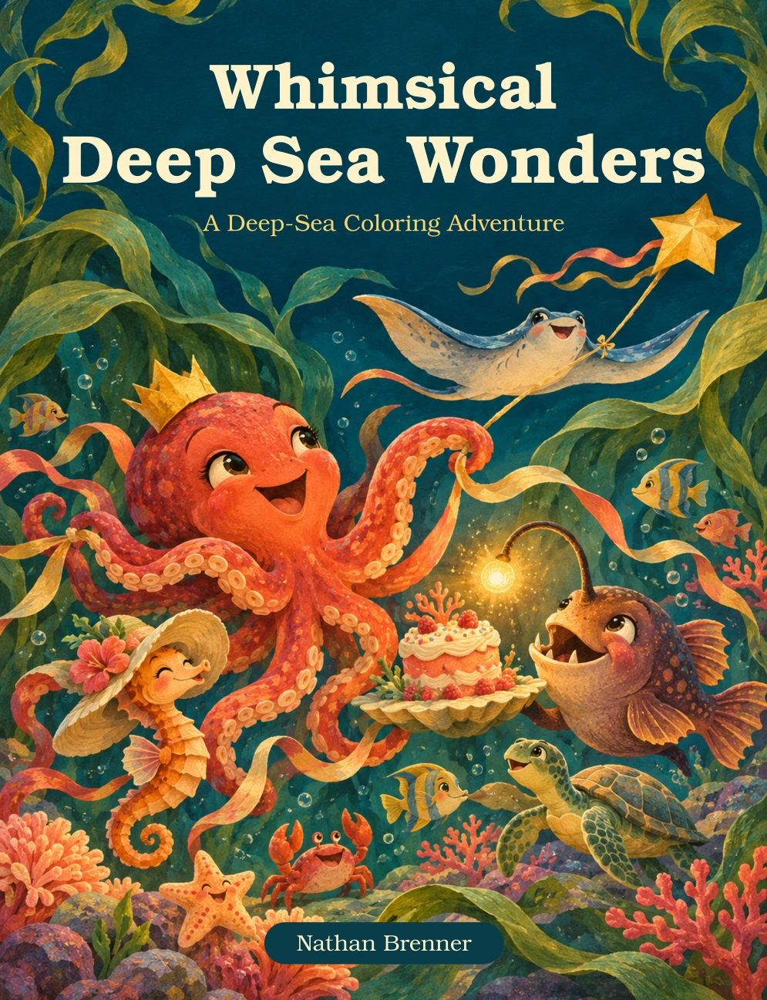

An invitation to color Whimsical Deep Sea Wonders

How do you blow out a birthday candle underwater? That’s the question I’d ask a kid looking at the cover of my new coloring book. The octopus seems pretty confident about the whole thing. The fish holding the light might have something to say about it.
Whimsical Deep Sea Wonders is out in paperback. Inside are 38 coloring pages and a little game I tucked into the artwork. Six pearls are hiding in the book. If you’re sharing it with a child, let them take the first look. Half the fun is getting to be the one who spots something the grown-up missed.
I like the idea of two people sharing a page. One of you can color the sea creatures while the other invents their voices. If you end up spending the whole afternoon on one picture because the seahorse has a long story to tell, I’d count that as a good afternoon.
If a copy makes its way to your kitchen table, I’d love to hear which creature your family colored first.
Find the paperback on Amazon